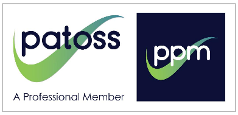

Empowering Learners
Helping learners to understand their strengths, access the right support and achieve with confidence.
- Level 7 Postgraduate Certificate SpLD Tutor/Assessor
- APC no: 500003570-IF10124
- PATOSS Member
- DBS checked

What we offer
Empowering Learners is a specialist educational practice providing dyslexia assessments, exam access arrangement assessments, specialist tuition and educational consultancy. Our aim is to provide expert guidance, practical support and personalised solutions that empower every learner.
Dyslexia Assessments
Our comprehensive dyslexia assessments are conducted by SASC-approved assessors ensuring that assessments meet recognised professional standards. We assess students between the ages of 8 and 18. Each assessment provides a detailed picture of an individual’s unique learning profile. Following an assessment, you will receive a comprehensive diagnostic report with tailored recommendations to support learning, access appropriate adjustments, and maximise potential. This report can be used as evidence to support an application for DSA.
Exam Access Arrangements
We carry out specialist assessments to determine eligibility for exam access arrangements in line with JCQ regulations. We work together with schools, colleges and learners to ensure appropriate arrangements are applied for.
Specialist Tuition (SpLD)
Our personalised one-to-one tuition supports learners with dyslexia and other specific learning difficulties to develop effective strategies, improve literacy skills, and build confidence. Sessions are tailored to each learner’s individual needs, helping them to achieve their academic goals.
Educational Consultancy
We provide expert advice and guidance to schools and colleges to support learners with additional needs. Whether you require recommendations, staff training, or advice on inclusive practice, we offer practical, evidence-based solutions tailored to your setting.
Why choose Empowering Learners?
At Empowering Learners, we believe that every individual deserves the opportunity to reach their full potential. Our friendly, personalised approach combines specialist expertise with genuine care.